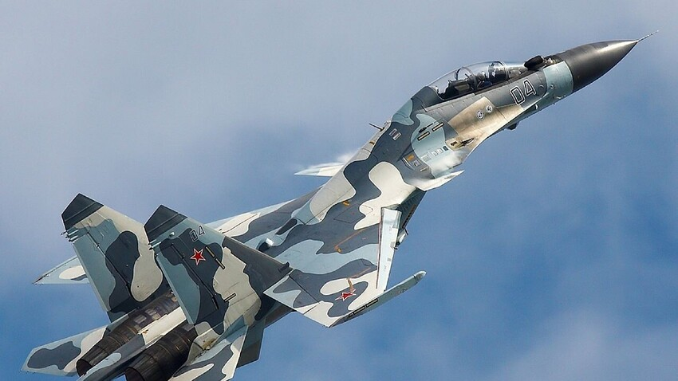
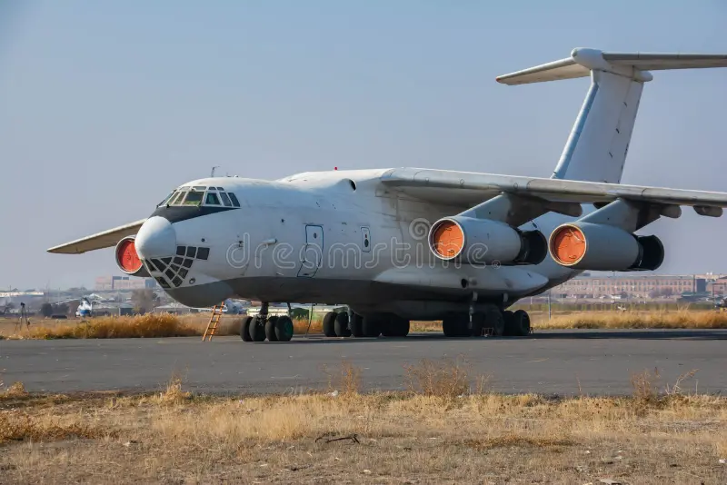

🛫Aviones🛬
¿Qué son los aviones?
Los aviones son vehículos diseñados para volar en la atmósfera terrestre. Están equipados con alas y motores que les permiten generar sustentación y propulsión, lo que les permite desplazarse por el aire. Los aviones se utilizan para el transporte de pasajeros, carga, y también para fines militares y recreativos. Existen diferentes tipos de aviones, como los comerciales, los privados, los militares y los de carga, cada uno con características específicas para cumplir con sus funciones.
Tipos de aviones
Existen varios tipos de aviones, cada uno diseñado para cumplir con diferentes propósitos. Algunos de los tipos más comunes incluyen:
- Aviones comerciales: Utilizados para el transporte de pasajeros y carga a nivel mundial. Ejemplos incluyen el Boeing 747 y el Airbus A380.
- Aviones privados: Utilizados por individuos o empresas para viajes personales o de negocios. Ejemplos incluyen el Cessna Citation y el Gulfstream G650.
- Aviones militares: Diseñados para uso en operaciones militares, como combate, transporte de tropas y reconocimiento. Ejemplos incluyen el F-22 Raptor y el Lockheed C-130 Hercules.
- Aviones de carga: Especializados en transportar mercancías en lugar de pasajeros. Ejemplos incluyen el Boeing 747-8F y el Antonov An-124.




Mas informacion en: Código fuente en GitHub